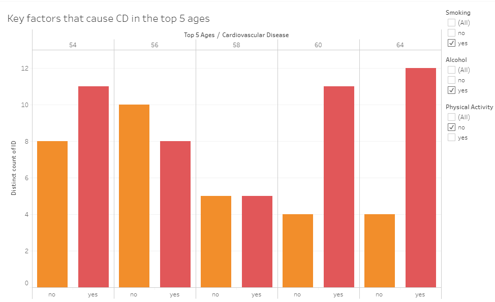
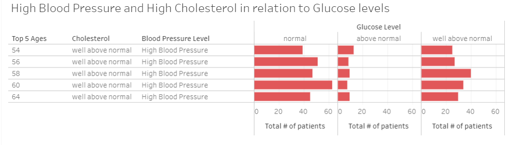

Tableau Analysis
Using Tableau, we analyzed the top five ages who are already diagnosed with cardiovascular disease. We explored their specific health data to help us understand how the key factors have a role in increasing the chance of getting cardiovascular diseases among those people.
{kind=link}
{kind=link}
![ In this chart, we look into 3 main factors that increase the chance of getting one of the cardiovascular diseases among the top 5 ages. The overall trend shows that people who have smoking and drinking habit while not working out tend to have higher possibility of getting cardiovascular diseases and this is trending more significantly among older age groups (60, 64). Even though we did not see the remarkable trend in the younger age group compared to the other, we can still see the positive correlation between the 3 habits and the chance of getting cardiovascular diseases among people with younger ages. This interactive visualization can be accessed by clicking this link](../Resources/key_factors.png){kind=link}
![ Among the top 5 ages, these patients are diagnosed with cardiovascular disease, with high cholesterol and high blood pressure, and observing what glucose levels they have. Blood glucose is often elevated in acute stroke, and higher admission glucose levels are associated with larger lesions, greater mortality and poorer functional outcome. Glucose Levels are observed as follows: - Normal average: 100 mg/dL - Above average: >101 and 139 mg/dL - Well above average: 140 mg/dL This interactive visualization can be accessed by clicking this link](../Resources/glucose_levels.png){kind=link}
{kind=link}